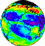

Solar Irradiance
Total solar irradiances are presented for the period November 16, 1978 through December 31, 1997. The
measurement
program is continuing and additional years will be added as they become available. This irradiance
provides
the energy that powers the Earth's climate and biosphere. It had long been suspected that the solar energy
emitted towards the Earth varied with time but this was not definitely demonstrated until accurate,
self-calibrating pyrheliometers flown on satellites began to regularly monitor the Sun (Hickey et al., 1980).
The measured solar variations are of the order of fractions of a percent and atmospheric transmission
problems had previously limited the accuracy of ground based measurements (
Willson, 1984). Data from four
experiments are included here: The Nimbus-7 Earth Radiation Budget (ERB) measurements (November 1978 -
December 1993), the Active Cavity Radiometer Irradiance Monitor I (ACRIM I) measurements (February 1980 -
July 1989) on the Solar Maximum Mission (SMM), the solar monitor measurements (October 1984 - June 1996)
on the Earth Radiation Budget Satellite (ERBS), and the ACRIM II measurements (October 1991 - December 1996)
on the Upper Atmosphere Research Satellite (UARS). ACRIM I & II was replaced by the final version which now
runs through December 1997. Both daily and monthly mean
values are given from the Nimbus-7 ERB (Hoyt et al.,
1992), ACRIM I & II (Willson, 1994),
and the ERBS/ERBE (Lee, 1995) measurement programs, and cover the area of
the solar disk. For ease of comparison all the measurements are converted to the value that would be
obtained at the mean annual Earth to Sun distance.
Clouds from ISCCP C2
Clouds play an important role in the climate change by affecting the heat exchange between the Sun,
Earth and atmosphere. They also modulate the solar irradiance incident on the Earth's surface
(the insolation) and this affects the productivity of plants both on land and in the water as well
as the surface temperature and heat budget. Numerous efforts to form cloud climatologies from both
surface and satellite observations have been made. At present the most important of these is the
ongoing International Satellite Cloud Climatology Project (ISCCP), established in 1982 as part of the
World Climate Research Program (WCRP). A combination of satellite-measured radiances, ice/snow cover
datasets and TOVS atmospheric temperature/humidity are used by ISCCP to produce a global dataset on
cloud and surface variables. Operational data collection and processing for ISCCP have been underway
since July 1983. An overview of the project and the data products is given in Rossow and Schiffer (1991);
the algorithm and its effectiveness are described by Rossow and Garder
(1993a&b) while Rossow et al.
(1993) compare the resulting products to other cloud climatologies. The ISCCP C2-series data products,
briefly described here (more extensively in Rossow et al. (1996)),
are gridded data averaged over each
month. These data (spanning over the period July 1983 to June 1991) are originally produced on an equal
area map grids which has a constant 2.5° latitude increments and variable longitude increments
ranging from 2.5° at the equator to 120° at the pole. The Goddard DAAC has regridded these
datasets to 1° x 1° equal angle grid for inclusion in the Interdisciplinary data collection.
New Clouds from ISCCP D2
Cloud cover is an extremely important climate parameter. Although only some clouds bring precipitation,
all affect the heat exchange between the Sun, Earth and cold space, and they are also quite variable in
time, from region to region, and in the effects they produce. Clouds modulate the solar irradiance
incident on the Earth's surface (the insolation) and this affects the productivity of plants both on
land and in the water as well as the surface temperature and heat budget. Numerous efforts to produce
cloud climatologies from both surface and satellite observations have been made. At present the most
important of these is the ongoing International Satellite Cloud Climatology Project
(ISCCP). A combination of satellite-measured radiances, TOVS
atmospheric temperature/humidity and ice/snow data are used by ISCCP to produce a global dataset on
cloud and surface variables. An overview of the Project and the data products is given in Rossow and
Schiffer (1991); the algorithm and its effectiveness are described by
Rossow and Garder (1993a&b)
while Rossow et al. (1993) compare the resulting products to other cloud
climatologies. The ISCCP D-series, which is described more extensively in
Rossow et al. (1996), is a revised version of the C-series dataset. The ISCCP D2-series products are
gridded data averaged over each month. These datasets (presently covering the period 1986-1987 & 1989-1992)
are originally produced on an equal area map grids which has a constant 2.5° latitude increments and
variable longitude increments ranging from 2.5° at the equator to 120° at the pole. The Goddard
DAAC has regridded a subset (36 out of the original 130 parameters) of these dataset to 1° x 1° equal
angle grid for inclusion in the Climatology Interdisciplinary Data Collection (CIDC).
Surface Radiation Budget from NASA
Langley
The surface radiation budget (SRB) is a basic climate and biosphere parameter which affects the surface
heat and moisture budget as well as biological productivity. This dataset covers the spectral range of
0.2-50 micrometers, and is divided into two regions: shortwave (SW, 0.2-5.0 micrometers) and thermal longwave
(LW, 5.0-50 micrometers). Both the downward and net radiation at the surface are given. It consists of
monthly means covering the period (July 1983-June 1991) and was developed by the Radiation Sciences Branch
of the Atmospheric Sciences Division at NASA Langley Research Center, Hampton, Virginia. The irradiances
are calculated using computationally fast radiative transfer algorithms whose primary input data come
from the International Satellite Cloud Climatology Project (ISCCP)
C1 products (Darnell et al., 1996;
Rossow and Schiffer, 1991). This dataset, like the ISCCP products,
was developed on an equal area world grid (about 280 km by 280 km). The data has been regridded to a 1° x 1° grid for easy comparison with the other Climatology Interdisciplinary Data
Collection parameters. There have been extensive validation efforts, including comparisons with surface
measurements (Gupta et al., 1993a; Whitlock et al., 1995; and Darnell et
al., 1996). Pinker et al. (1995)
discuss a number of research fields in which this data will be very useful. The Global Energy and
Water-cycle Experiment (GEWEX) SRB Project chose the Langley short- and long-wave SRB algorithms as one
pair of two shortwave and two longwave algorithms to produce SRB fluxes for the twelve year study period
(July'83 through June'95).
Surface Solar
Irradiance from NASA GISS
The surface solar irradiance (250-4000 nm) is a basic climate and biosphere parameter which affects
the surface temperature and photosynthesis in both marine and land plants. It is also important to
geochemical cycling because both biological and photochemical processes strongly perturb distributions
of chemical species on land and in the ocean. Clouds are a major modulator of the surface solar
irradiance. Bishop and Rossow (1991) developed a fast radiative transfer algorithm for calculating
the downwelling surface solar irradiance which uses the total cloud amount from the International
Satellite Cloud Climatology Project (ISCCP) as an important input
parameter. Their algorithm has gone
through three versions, reprocessing using the version 3 algorithm is in progress. Eight years
(July '83 - June '91) of monthly downward surface solar irradiance (W/m2) calculated using version
2 algorithm are presented here. The original data was on a 2.5° x 2.5° grid, which has been
interpolated to a 1° x 1° grid.